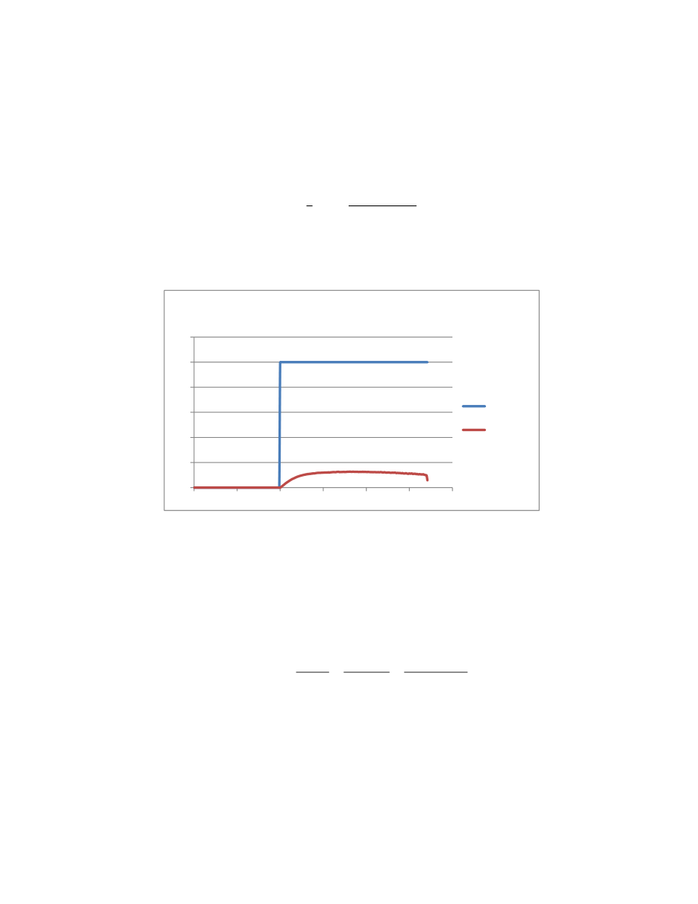

Loading...
First, we analyze the first order system via system identification. The response to various step inputs for the cart was analyzed and found to have an average steady state response of about one eighth the step input. Thus we labeled the gain of the system to be .125.
In order to analyze the first order time constant, The approximation given in the previous system identification was utilized and the time constant solved for.
−
𝑡𝜏
= ln
𝑦(𝑡) − 𝑦(0)𝑦(∞) − 𝑦(0)
Via our calculation, it was discovered that the time constant for the system was .16 seconds. Integrating the system in the s-domain leads us to our cart position term, and will allow us to design the controller.
4. Controller Design The first step to design the SeeSaw system controller is to design the cart controller. In this situation, the SeeSaw is fixed at the horizontal position. The cart could move freely on the track of the SeeSaw, which is the same as that in cart system identification. The cart model used in this section is the result obtained by system identification:
()cXs( )V s
0.125(0.16 1)s
()pGs
k(s
)1
s
s
Root locus method is utilized here to design a lead controller of the cart dynamic. The performance is specified as:
Settling time of 0.2s Percentage overshoot is less than 25%
With these criteria, the dominant second order poles can be derived:
0
1
2
3
4
5
6
0
0.5
1 1.5 2 2.5 Figure 13: Cart Velocity Step Response
3
Cart Velocity Step Response
Input
Response